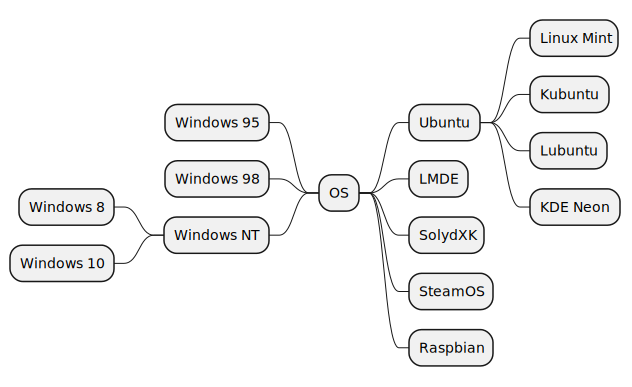
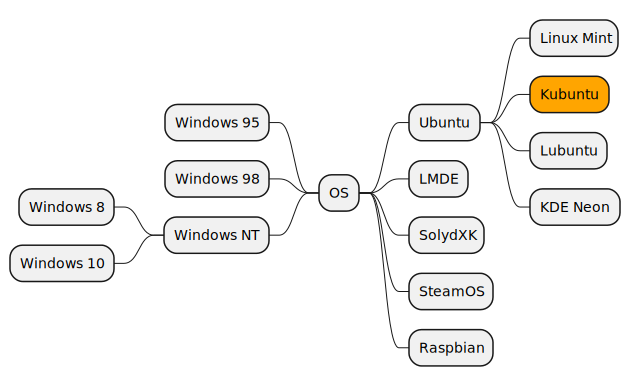
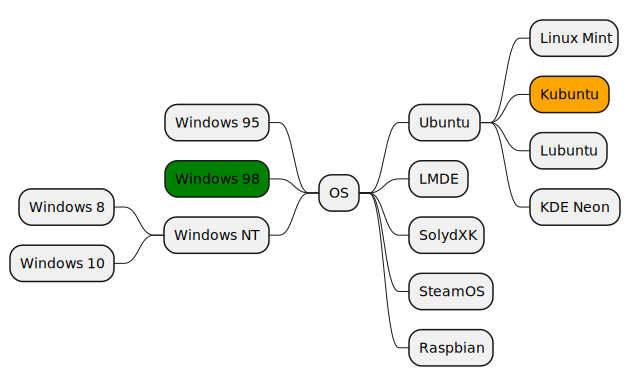

For this presentation I’ve used:
ORG mode (along with Emacs)
I write my content in ORG mode and use org-re-reveal to generate the HTML code.
You can easily generate mind maps, sequence diagrams, components diagrams and much more. As an export format you can chose between PNG and SVG.
Adds animations using SVG.js
@startmindmap
skinparam backgroundColor transparent
+ OS
++ Ubuntu
+++ Linux Mint
+++ Kubuntu
+++ Lubuntu
+++ KDE Neon
++ LMDE
++ SolydXK
++ SteamOS
++ Raspbian
-- Windows 95
-- Windows 98
-- Windows NT
--- Windows 8
--- Windows 10
@endmindmap
Don’t worry about the strange syntax highlighting 🙈
The generated SVG:

Figure 1: The generated SVG
I would like to emphasize one element in my mind map like this:

Or multiple ones

… without having to create multiple SVG files.
head -n 1 < ../public/2024/animations-in-revealjs/images/mindmap-os.svg
<?xml version="1.0" encoding="us-ascii" standalone="no"?>
Ok, we need some formatting.
xmllint --format ../public/2024/animations-in-revealjs/images/mindmap-os.svg
<?xml version="1.0" encoding="us-ascii" standalone="no"?>
<svg xmlns="http://www.w3.org/2000/svg" xmlns:xlink="http://www.w3.org/1999/xlink" contentStyleType="text/css" height="387px" preserveAspectRatio="none" style="width:632px;height:387px;" version="1.1" viewBox="0 0 632 387" width="632px" zoomAndPan="magnify">
<defs/>
<g>
<rect id="0" fill="#F1F1F1" height="36.2969" rx="12.5" ry="12.5" style="stroke:#181818;stroke-width:1.5;" width="40" x="319" y="174.8164"/>
<text fill="#000000" font-family="sans-serif" font-size="14" lengthAdjust="spacing" textLength="20" x="329" y="197.8115">OS</text>
<rect id="1" fill="#F1F1F1" height="36.2969" rx="12.5" ry="12.5" style="stroke:#181818;stroke-width:1.5;" width="71" x="409" y="104.4453"/>
<text fill="#000000" font-family="sans-serif" font-size="14" lengthAdjust="spacing" textLength="51" x="419" y="127.4404">Ubuntu</text>
<rect id="2" fill="#F1F1F1" height="36.2969" rx="12.5" ry="12.5" style="stroke:#181818;stroke-width:1.5;" width="88" x="530" y="20"/>
<text fill="#000000" font-family="sans-serif" font-size="14" lengthAdjust="spacing" textLength="68" x="540" y="42.9951">Linux Mint</text>
<path d="M480,122.5938 L490,122.5938 C505,122.5938 505,38.1484 520,38.1484 L530,38.1484 " fill="none" style="stroke:#181818;stroke-width:1.0;"/>
<rect id="3" fill="#F1F1F1" height="36.2969" rx="12.5" ry="12.5" style="stroke:#181818;stroke-width:1.5;" width="79" x="530" y="76.2969"/>
<text fill="#000000" font-family="sans-serif" font-size="14" lengthAdjust="spacing" textLength="59" x="540" y="99.292">Kubuntu</text>
<path d="M480,122.5938 L490,122.5938 C505,122.5938 505,94.4453 520,94.4453 L530,94.4453 " fill="none" style="stroke:#181818;stroke-width:1.0;"/>
<rect id="4" fill="#F1F1F1" height="36.2969" rx="12.5" ry="12.5" style="stroke:#181818;stroke-width:1.5;" width="77" x="530" y="132.5938"/>
<text fill="#000000" font-family="sans-serif" font-size="14" lengthAdjust="spacing" textLength="57" x="540" y="155.5889">Lubuntu</text>
<path d="M480,122.5938 L490,122.5938 C505,122.5938 505,150.7422 520,150.7422 L530,150.7422 " fill="none" style="stroke:#181818;stroke-width:1.0;"/>
<rect id="5" fill="#F1F1F1" height="36.2969" rx="12.5" ry="12.5" style="stroke:#181818;stroke-width:1.5;" width="90" x="530" y="188.8906"/>
<text fill="#000000" font-family="sans-serif" font-size="14" lengthAdjust="spacing" textLength="70" x="540" y="211.8857">KDE Neon</text>
<path d="M480,122.5938 L490,122.5938 C505,122.5938 505,207.0391 520,207.0391 L530,207.0391 " fill="none" style="stroke:#181818;stroke-width:1.0;"/>
<path d="M359,192.9648 L369,192.9648 C384,192.9648 384,122.5938 399,122.5938 L409,122.5938 " fill="none" style="stroke:#181818;stroke-width:1.0;"/>
<rect id="6" fill="#F1F1F1" height="36.2969" rx="12.5" ry="12.5" style="stroke:#181818;stroke-width:1.5;" width="59" x="409" y="160.7422"/>
<text fill="#000000" font-family="sans-serif" font-size="14" lengthAdjust="spacing" textLength="39" x="419" y="183.7373">LMDE</text>
<path d="M359,192.9648 L369,192.9648 C384,192.9648 384,178.8906 399,178.8906 L409,178.8906 " fill="none" style="stroke:#181818;stroke-width:1.0;"/>
<rect id="7" fill="#F1F1F1" height="36.2969" rx="12.5" ry="12.5" style="stroke:#181818;stroke-width:1.5;" width="75" x="409" y="217.0391"/>
<text fill="#000000" font-family="sans-serif" font-size="14" lengthAdjust="spacing" textLength="55" x="419" y="240.0342">SolydXK</text>
<path d="M359,192.9648 L369,192.9648 C384,192.9648 384,235.1875 399,235.1875 L409,235.1875 " fill="none" style="stroke:#181818;stroke-width:1.0;"/>
<rect id="8" fill="#F1F1F1" height="36.2969" rx="12.5" ry="12.5" style="stroke:#181818;stroke-width:1.5;" width="84" x="409" y="273.3359"/>
<text fill="#000000" font-family="sans-serif" font-size="14" lengthAdjust="spacing" textLength="64" x="419" y="296.3311">SteamOS</text>
<path d="M359,192.9648 L369,192.9648 C384,192.9648 384,291.4844 399,291.4844 L409,291.4844 " fill="none" style="stroke:#181818;stroke-width:1.0;"/>
<rect id="9" fill="#F1F1F1" height="36.2969" rx="12.5" ry="12.5" style="stroke:#181818;stroke-width:1.5;" width="84" x="409" y="329.6328"/>
<text fill="#000000" font-family="sans-serif" font-size="14" lengthAdjust="spacing" textLength="64" x="419" y="352.6279">Raspbian</text>
<path d="M359,192.9648 L369,192.9648 C384,192.9648 384,347.7813 399,347.7813 L409,347.7813 " fill="none" style="stroke:#181818;stroke-width:1.0;"/>
<rect id="10" fill="#F1F1F1" height="36.2969" rx="12.5" ry="12.5" style="stroke:#181818;stroke-width:1.5;" width="104" x="165" y="104.4453"/>
<text fill="#000000" font-family="sans-serif" font-size="14" lengthAdjust="spacing" textLength="84" x="175" y="127.4404">Windows 95</text>
<path d="M319,192.9648 L309,192.9648 C294,192.9648 294,122.5938 279,122.5938 L269,122.5938 " fill="none" style="stroke:#181818;stroke-width:1.0;"/>
<rect id="11" fill="#F1F1F1" height="36.2969" rx="12.5" ry="12.5" style="stroke:#181818;stroke-width:1.5;" width="104" x="165" y="160.7422"/>
<text fill="#000000" font-family="sans-serif" font-size="14" lengthAdjust="spacing" textLength="84" x="175" y="183.7373">Windows 98</text>
<path d="M319,192.9648 L309,192.9648 C294,192.9648 294,178.8906 279,178.8906 L269,178.8906 " fill="none" style="stroke:#181818;stroke-width:1.0;"/>
<rect id="12" fill="#F1F1F1" height="36.2969" rx="12.5" ry="12.5" style="stroke:#181818;stroke-width:1.5;" width="105" x="164" y="217.0391"/>
<text fill="#000000" font-family="sans-serif" font-size="14" lengthAdjust="spacing" textLength="85" x="174" y="240.0342">Windows NT</text>
<rect id="13" fill="#F1F1F1" height="36.2969" rx="12.5" ry="12.5" style="stroke:#181818;stroke-width:1.5;" width="95" x="19" y="188.8906"/>
<text fill="#000000" font-family="sans-serif" font-size="14" lengthAdjust="spacing" textLength="75" x="29" y="211.8857">Windows 8</text>
<path d="M164,235.1875 L154,235.1875 C139,235.1875 139,207.0391 124,207.0391 L114,207.0391 " fill="none" style="stroke:#181818;stroke-width:1.0;"/>
<rect id="14" fill="#F1F1F1" height="36.2969" rx="12.5" ry="12.5" style="stroke:#181818;stroke-width:1.5;" width="104" x="10" y="245.1875"/>
<text fill="#000000" font-family="sans-serif" font-size="14" lengthAdjust="spacing" textLength="84" x="20" y="268.1826">Windows 10</text>
<path d="M164,235.1875 L154,235.1875 C139,235.1875 139,263.3359 124,263.3359 L114,263.3359 " fill="none" style="stroke:#181818;stroke-width:1.0;"/>
<path d="M319,192.9648 L309,192.9648 C294,192.9648 294,235.1875 279,235.1875 L269,235.1875 " fill="none" style="stroke:#181818;stroke-width:1.0;"/>
<!--SRC=[LP7BRi8m44Nt_efPWg8W0gM5h519MeaaW7YrsqdYHXR9EFA3bh-lquU0bU-PwxcQiUVQe3ADeBB1bkcJe1OLDf1ZSQgKj5GkP2qL68MadSN9C0_ME-PvSCWj6UkK1waW-mMPw5o7YRsnRdGInR3YahhkD8lYxjp9-bA-9p_IS6n-ixUesrmWCT-7DpUT_DGmczpHz9PMUqTNdDvHC6HpxZRysv9jQYHpo58uSwM590W6e-5eF0Z6lSnHn0i80WXcuMWOJfvW4U-Xy_kizxf9GKkh2Wwbq4Q9t1eNq6TBF2DitQAYuI6iMqxBAFalG4ndeIGrtUijZzdrmkE3_omCxBXoey0nOn7_G5iRrr78Kb0Lmc7_uazPYbHPh5ms9xPm_sBKnNcxRm00]-->
</g>
</svg>
Way better 😎. Now we can even see the rect and text elements inside the SVG.
But something is missing. Right!
The SVG elements contain absolutely no IDs 😱
We can not select each element individually!
Emacs and Elisp to the rescue! Let’s add some IDs.
(defun add-id-to-rects-in-region (start end)
"Add incremental id attributes to <rect id="30"> elements within the region from START to END."
(interactive "r") ; Makes the function interactive
(save-excursion
(save-restriction
(narrow-to-region start end)
(goto-char (point-min))
(let ((id-counter 0))
(while (search-forward "<rect id="31"" nil t)
(unless (looking-at ".*?id=") ; Check if 'id' attribute already exists
(insert (format " id=\"%d\"" id-counter))
(setq id-counter (1+ id-counter))))))))